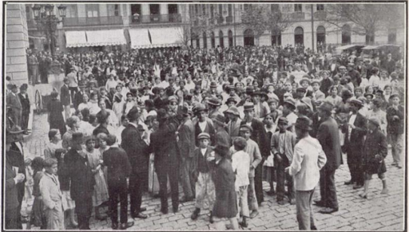

Na primeira página está escrito “Não ser ouvido não é motivo de silêncio”. Nesse momento,
você escuta uma voz lhe dizendo: “Esse diário é uma memória viva de todas as mulheres sem
nomes, que não apareceram nas folhas de jornais, tampouco nos livros. Essas mulheres viveram
e foram brilhantes, valentes e incríveis à sua maneira. Elas podem ter sido esquecidas ou
apagadas pela História tradicional, mas seus espíritos vivem e clamam para serem lembradas.
Aqui você vai encontrar algumas dessas memórias”.
"Fui uma mulher operária que lutei por condições melhores de vida.

"Somos mulheres grevistas."
"Participamos da Companhia Negra de Revistas."
"Fui trabalhadora da indústria têxtil."
"Trabalhamos no campo nas lavouras de café."
Fim.
Esperamos que tenha gostado da visita!